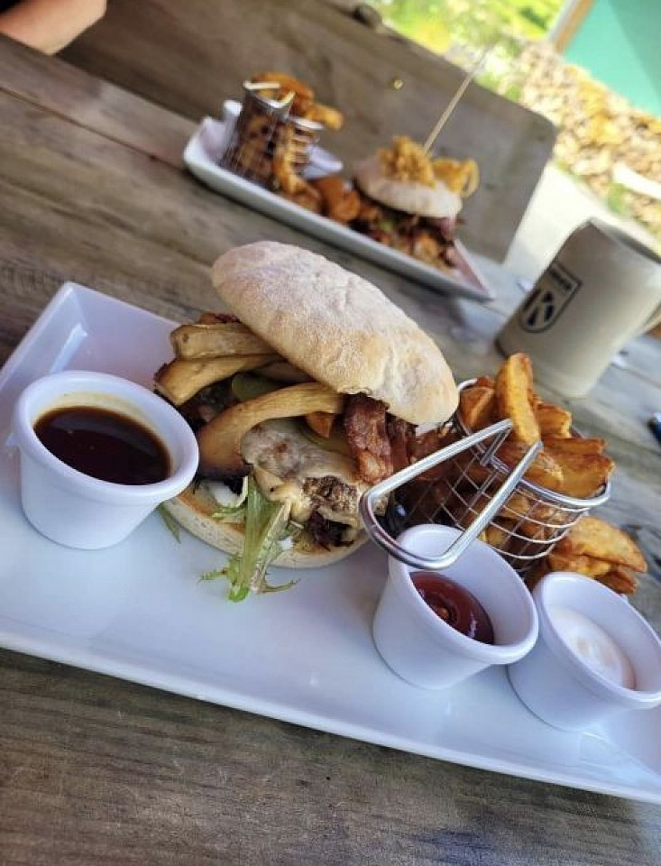

Frisch gebackenes kleines Sauerteigbrot mit Griebenschmalz
7,50 €
Restaurant & Hofcafé
Frisch gekocht.
Herzlich serviert.
Regionale Küche und hausgemachte Kuchen in der historischen Jungenwaldmühle.
Ein Familienbetrieb
mit Persönlichkeit
In Küche, Backstube und Service entsteht ein persönlicher Ort, an dem frisch gekocht und im Haus gebacken wird.
Das Ergebnis ist ein Ort, an dem Gastgeber und Küche persönlich erlebbar sind.


Öffnungszeiten 2026
Vom 1. April bis 31. Oktober: Samstag bis Dienstag von 11:30 bis 21:00 Uhr. Warme Küche gibt es von 12:00 bis 19:30 Uhr.
Vom 1. November bis 31. März: Samstag und Sonntag von 11:30 bis 21:00 Uhr. Warme Küche gibt es bis 19:30 Uhr.
Saisonale Zeiten können sich ändern. Vor längerer Anfahrt empfiehlt sich eine kurze Bestätigung.